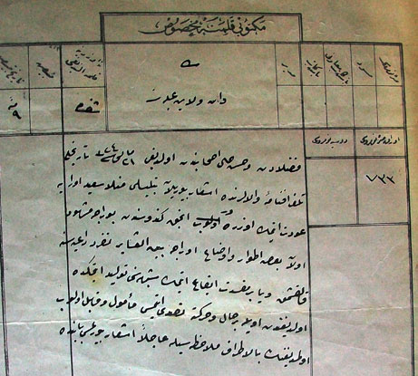

Bediüzzaman’ýn Kürd Alimleri, Aðalarý ve Þeyhlerine mektubu
Bu haftaki yazý Üstadýn hayatýnda bilinmeyen bir iki noktanýn aydýnlatýlmasýna katký saðlayacaktýr. Bilindiði gibi Üstadýn ilk Ýstanbul hayatý çalkantýlý geçmiþ, maceranýn sonu hapishanede tamamlanmýþtý. Hapisten ne zaman çýktýðý ve kimin aracýlýðý ile tahliye edildiði bilinmiyordu. Bizzat tarafýmdan hazýrlanan tarihçelerde tahliye sebebi o günlerde artan Ýttihatçýlarýn nüfuzuna verilmiþti. Ancak yeni ele geçen bir arþiv belgesi bu konuya bir hayli açýklýk getirmektedir.

Bediüzzaman hapisten ne zaman tahliye edildiDahiyle Nezareti Mektubî Kalemi’nce yazýlan belge þöyle der:
“Van vilayet-i aliyyesine
Fuzaladan ve hüsn-i hal ashabýndan olduðu 21 Mayýs 324 tarihli telgrafname-i vaâlâlarýnda iþ’ar buyrulan Bitlisli Molla Said oraya avdet etmek üzeredir. Ancak kendisinden buraca meþhud olan bazý etvar ve evza’ oraca beyn’el-aþâir teferrüd daiyesine kalkýþmak veya bir mefsedet îka etmek þüphesini tevlid etmekte olduðundan öyle bir hal ve harekete tasaddi etmesi me’mul ve kâbil olup olmadýðýnýn bi’l-etraf mülahazasýyla acilen iþâr buyrulmasý babýnda ..”
Belgenin tarihi bir hayli dikkat çekicidir. 6 Temmuz 1324/19 Temmuz 1908 bu tarih II. Meþrutiyet’in ilanýndan sadece 4 gün öncedir. Þayet yola çýkarýlmýþ ise Meþrutiyet’in ilanýný yolda öðrenmiþ ve derhal geri dönmüþ olmalýdýr. Zira Meþrutiyet’in üçüncü günü Ýstanbul’da meþhur hürriyet nutkunu okuduðu bilinmektedir.
Belge ayný zamanda Üstad’ýn serbest býrakýlma sebebini de açýklar mahiyettedir. Buna göre Üstad’ýn durumu Van’dan sorulmuþ, Valilik O’nun faziletlerini ve güzel hasletlerini bildiren bir cevap vermiþtir. Buna raðmen Üstad’ýn 40 gün daha hapiste tutulmasý ayrý bir garabettir.
Bediüzzaman ve Sultan Abdülhamid
Zaman zaman suistimallere ve yanlýþ anlamalara sebep olan Bediüzzaman ve Sultan Abdülhamid arasýndaki iliþkiler ayrý bir araþtýrmanýn konusudur. Ancak çok temel bir iki hususa iþaret etmek yerinde olacaktýr.
Bu konudaki en temel yanlýþ, Peygamber varisi bir alim ile, siyasî bir devlet adamýný ayný kefeye koyup aralarýnda karþýlaþtýrma yapmaktýr. Bu karþýlaþtýrma bizi tamamen yanlýþ sonuçlara götürür.
Tarih boyunca alimler bilhassa ilimleri ile amel eden peygamber varisleri, devlet adamlarýný ikaz edip eleþtirmiþlerdir. Bu eleþtirilerinde tamamen haklý gerekçeleri vardýr. Hiç kimse kalkýp, bir alim ile bir devlet reisini kýyaslayýp, þu haklý, bu haksýz gibi bir ayrým yapmaz. Alim Kur’an’ýn emirlerini ve sünnetin prensiplerini nazara alýr, bunlara uymayan davranýþlarý þiddetle eleþtirir. Bu duruma herkes saygý gösterir.
Siyasetçinin davranýþlarý ise çoðu zaman uluslararasý siyasetin, dýþ güçlerin, zamanýn icaplarýnýn tazyiki altýnda, binbir pazarlýk sonunda þekillenir.
Bu prensip açýsýndan Sultan Abdülhamid’in dönemi deðerlendirildiðinde onu zaman zaman tenkid eden, M.Akif, Elmalý, Mustafa Sabri ve Ýmam Bediüzzaman gibi þahsiyetlerin yaptýklarý eleþtirilerin Kur’an ve Sünnet hukuku açýsýndan son derece haklý gerekçeleri vardýr. Bu tenkitleri yapmak ayný zamanda “haksýzlýk karþýsýnda susmama” kuralý açýsýndan üzerlerine farz bir görevdir.
Öte yandan Sultan’ýn da kendine göre siyasî sebepleri vardýr. Siyasî sebepleri kendisi gibi siyasetçiler deðerlendirir, “iyi yaptý” ya da “kötü yaptý” þeklinde bir tespitte bulunabilirler. Sözün özü sünnete baðlý bir alim, zamanýn sultanýný eleþtirdiði için hiçbir þekilde haksýz görülemez, hele sultan ile ilim adamý arasýnda bir kýyaslama yapýlamaz.
Bu ayrýntýya girilmesinin özel bir sebebi var elbette! O da Sultan Abdülhamid’in halk nazarýndaki sevgisini ‘bir þekilde maddî yada manevî ranta çevirmek isteyen’ bazý gruplarýn fýrsattan istifade, yukarýda izah etmeye çalýþtýðým yanlýþý bilerek tekrar etmeleri ve “bak bu zat veli padiþaha ne demiþ!” diye söze baþlayýp, post kapma yarýþýný ýsrarla sürdürmek istemeleridir.
Sultaný eleþtirmenin ölçüsü
Ýmam Bediüzzaman, sadece tefsir ya da kelam ilminde imam deðildir. O zat ayný zamanda tarih ilminde de imamdýr. Bir çok konuda Risale-i Nurlar hala gerçek muhataplarýnýn ellerine ulaþmamýþtýr. Tarih konusu da bu alanlardan biridir. Cemaat tarih konusunda klasik milliyetçi kanadýn etkisi altýnda kalmýþ, zaman zaman ‘Üstadýn tarih konusunda bir hatasý ile Risale-i Nurlar mahkum edilemez’ türünden açýklamalar yapýlmýþtýr. Oysa tarih anlayýþýnda Ýmam Bediüzzaman’ýn ortaya koyduðu prensipler, dînî tecdidin bir parçasýdýr, biri diðerinden ayrý düþünülemez!
Bu konu oldukça uzun ve önemli bir konudur ve ayrý bir çalýþmada ele alýnacaktýr. Ancak bir prensibe iþaret etmek yerinde olur. Yukarýda adý geçen alimler, Sultan Abdülhamid’i daha iyi bir Müslüman olarak görmek istedikleri için eleþtirmiþlerdi. O zat iþ baþýnda iken, yetkili ve sorumlu olduðu için, görülen her türlü eksiklik, þiddetli bir tarzda dile getirilmiþ düzeltilmesi istenmiþti. Bu son derece normal bir durumdu.
Sultan Abdülhamid, iþ baþýndan gittikten sonra, Ýttihatçýlar ve Kemalistler, onu eleþtirmeye devam ettiler. Kendi suçlarýný onu eleþtirerek örtme yolunu seçmiþlerdi. Bu durumda Ýslam alimleri sustular. Zira Kemalistler Sultan’ý Müslüman olduðu için eleþtirmekteydiler. Onlarla ayný safta Sultan’ý eleþtirmek insafsýzlýktý. Ayrýca Ýslam karþýtý cephenin toplarý nereye çevrilmiþ ise, o cepheyi müdafaa etmek bir fazilet örneðiydi. Ýmam Nursî bu düsturu “ben tokadýmý Antranik ile birlikte Enver’e; Venizelos ile birlikte Said Halim’e vurmam! Vuran da nazarýmda sefildir!” þeklinde formül haline getirmiþti.
Yanlýþ anlaþýlma korkusu ile bu uzun açýklama araya girdi
Yukarýdaki belgeye geri dönülecek olursa, istibdat döneminin son Dahiliye Nazýrý’na göre Molla Said, aþiretleri ayaklandýrýp bir isyan çýkarabilirdi. Dikkat edilmeliydi! Bu ifadelere bakýlýrsa Ýmam Nursî’yi hiç kimse dinlememiþ ve anlamaya çalýþmamýþtý. O, Kürd çocuklarý cahil kaldýlar. Batýnýn uðursuz fikirleri bölgede yayýlýyor! Kürtler için istikbalde müthiþ darbeler hazýrlanýyor, bu durum basiret ehlinin yüreklerini parçalýyor. Medrese ismi altýnda fen bilgisi ve dini ilimleri mahalli lisan ile birlikte okutacak üç ayrý bölgede okullar açýlsýn, ihtilaftan dolayý kaybedilen Kürtler geri kazanýlsýn diye çýrpýnýrken, (1) bu uðurda hapislere atýlýrken, Nazýr Efendi, Bediüzzaman’ýn isyan çýkaracaðýndan bahsediyordu. Bu derece körlük ancak devþirme nazýrlara yakýþan bir durumdu.
Sultan Abdülhamid’i müstebit diye eleþtiren Kemalistler kendileri yüz kat daha þiddetli bir istibdat uygulayacaklar ve Ýmam Nursi için ayný iddiayý tekrar edeceklerdi: “Said Nursî bölücüdür ve güvenliði tehdit etmektedir….!”
Oysa karþýlarýnda her dönemde dik duran bir hakikat kahramaný vardý. Bir asýrlýk hayatýnda fikir istikameti açýsýndan en ufak bir sapma göstermemiþti. Hapislere atýlýp onuru kýrýldýðý halde ilk fýrsatta yine kardeþlikten bahsetti. Selanik’te yayýnlanan Ýttihat ve Terakki Gazetesinde neþrettiði bir mektup ile her iki dönemin müfterilerine tokad gibi bir cevaptý:
“Kürdlerin þerefli ve itibarlý alimlerinden Molla Sadi-i Meþhur tarafýndan Kürdlerin alimleri, þeyhleri, reisleri ve fertlerine hitaben yazýlan mektuptur.
Ey Peygamberin varisleri olan Kürd alim ve þeyhleri, hükümet merkezinde olduðum için sizleri uyarýyorum!
Þöyle ki bu son zamanlarda istibdad fikrinin karanlýk bulutlarý, Ýslamiyet’in hakiki yücelik ve güzelliðini örtmüþtü. Öyleki adeta Ýslamiyet yabancýlarýn nazarýnda adalete, hürriyete ve geliþmeye engelmiþ gibi anlaþýlmaktaydý. Haþa sümme haþa!
Zira (sadr-ý evvelin) Ýlk dört halifenin hürriyet, eþitlik ve adaleti açýk bir delildir ki parlak þeriat; hürriyet, adalet ve eþitliðin her türlü baðlarýný ve þartlarýný içermektedir.
Çünki þeriat kelam-ý ezeliden geldiði için ebede gidecektir. Nasýlki peygamberler vahiy ile temel esaslarý kurmuþ ve müçtehidler içtihad ile diðer hükümleri onlardan çýkarmýþlar. Siz de zamanýn ihtiyaçlarýna göre o adalet hükümlerinin uygulanma yollarýný gösteriniz.
Ey Kürtlerin cesur reisleri!
Þimdiye kadar padiþaha itaat ettiniz, fakat milletin vahþetinden dolayý gerileme ve sönmeye mahkum olan kuvvet ve zorlamayý millete karþý kullanmaya lüzum gördünüz! Þimdi de padiþah imamdýr, ona uyunuz! Zira o ebedî bir ömre mazhar olan marifet ve adalet ile milletini idare edecek! Siz de öyle yapýnýz! Kuvvet ve þiddet yerine akýl ve zekayý kullanýnýz! Taki kurtuluþa eresiniz! Çünki hakim bir fert deðil ki aldatmak mümkün olsun! Þimdi hakim milletin birliðinden doðan ortak fikirlerdir. (efkar-ý umumiye, kamu oyudur). Buna karþý hile; ancak hileyi terk etmek ve doðruluk göstermekle olur.
Sözün özü, padiþahýmýz o çok haþmetli aðalýk kürkünü, adaletin ve merhametin ipek –elbisesi- ile deðiþtirdi. Sizde o eski aðalýk abasý yerine adil reislik gömleðini giyiniz!
Ey baðlý arslanlar gibi duran Kürdler!
Þimdiye kadar iki yönden esir idiniz! Bir istibdat hükümetinin zalim vergileri ile, diðeri bazý zalim -reislerinizin- soygun ve yaðmalarýyla. Þimdi bu büyük inkýlaptan sonra özgürsünüz! Her biriniz kendi aleminizde insanlarýn hakkýna tecavüzü önlemek þartýyla, adil hükümete itaat suretiyle hürsünüz! Bunu korumak için ellerinizden geldiði kadar milletin birliðine her yönden hizmet ve vatandaþlarýn haklarýnýn muhafazasýna gayret ediniz!
Zira bizim ve belki umum Ýslam milletinin ve kesinlikle Osmanlýlarýn hayatý bu milletin ittihadý ve birliðine baðlýdýr.
Ey bütün Kürdler
Uyanýk olunuz! Taki bozguncu fikirlere sahip olanlar sizin kalplerinizdeki ayrýlýktan yararlanmasýn! Ve bu milletin þanlý birliðine –ayrýlýk- bozgunculuk mikrobu vermesin!
O vakit bütün millet ve Ýslamiyet sizden davacý olacak, bu ayrýmcýlýk karmaþasýný zamanýn tokadýný yemeden terk ediniz! Zira kurtuluþ ve selamet fikir birliðindedir. Biz muvahhidiz (ayný itikadý taþýyoruz) fikir birliði ve kalplerin ittihadýný saðlamakla görevliyiz!
Bunu da kesinlikle biliniz ki her tarafa saldýran medeniyete karþý, vahþet muhafaza edilemeyecektir. Sizden beklediðim nokta Kürdlüðün namus ve haysiyetini korumak -için-, yiðit ve kahraman olan Arnavutlara uyunuz! Bu da adalet eþitlik ve kardeþliðe hizmet etmekle olur!
Yaþasýn yüce Þeriat! Yaþasýn ilahî adalet! Yaþasýn cesaret timsali olan askerlerimiz! Yaþasýn gücün timsali olan ordularýmýz! Yaþasýn Peygamberin halifesi! Yaþasýn akýl ve millet için fedakarlýðýn sembolü olan millî cemiyetimiz! Yaþasýn bütün Osmanlýlar” (2)
(Makalenin aslý için bkz. Meþrutiyete Dair Telkinat)
Mektubun düþündürdükleri
Mektupta ilk göze çarpan husus; Ýmam Bediüzzaman kendisine yapýlan haksýz ve insafsýz resmî muamelelere göre fikir deðiþtirmeyi düþünmemiþtir. Resmî þüphelerin tamamen aksine Ýslam milletinin ittihadýna fevkalade önem verdiðini göstermiþtir. Fikir namusunun bundan daha saðlam bir ölçüsü olamaz. Üstelik bu durum sadece bu ilk hapsi için söz konusu deðildir. Bilindiði gibi 31 Mart hadisesi sonrasýnda irtica ithamý ile tutuklanmýþ, Hareket Ordusunca idamla yargýlanmýþ, ama O yine küsmemiþ, doðuya döndüðünde aþiretler arasýnda yine hürriyeti ve meþrutiyetin güzelliklerini anlatmaya devam etmiþtir. Meþhur Münazarat eseri bu dönemin bir manifestosu hükmündedir.
Ayný þekilde tek parti hükümetlerinin 23 yýl süren iþkenceli sürgünlerine ve bölücülük ithamlarýna karþý küsmemiþ, her zeminde kardeþlik söylemini güçlendirerek anlatmaya devam etmiþtir. Onlar yüz yýllýk iftiralarýndan bir adým geri atmasalar da Ýmam Bediüzzaman, ortaya koyduðu fikir çizgisi ile ayný zamanda bir “Ýstikamet Ýmamý” olduðunu da göstermiþtir.
Yetkilerin sadece Sultan’da toplanmasý ile seçilmiþ bir meclis tarafýndan kullanýlmasý arasýndaki farký “hakim bir fert deðil ki aldatmak mümkün olsun! Þimdi hakim milletin birliðinden doðan ortak fikirlerdir” þeklinde veciz bir þekilde ifade eden Üstad’ýn bu yaklaþýmý, bir yönüyle geçmiþ yüz yýlý özetlediði gibi diðer yönüyle hala ulaþýlmasý mümkün görülmeyen bir millî hayal olarak ortada durmaktadýr.
Ýslam milletinin birliði ve kardeþliðe yapýlan vurgunun önündeki en büyük engel, artýk varlýðý kanýksanan yabancý güçlerin bölge üzerindeki hesaplarýdýr. Bu hesabý bozmanýn yegane yolu bir yandan Risale-i Nurlarýn ders kitabý olarak okullarda okutulmasý, diðer yandan bölge ile ilgili global planlar için masaya oturabilecek þekilde ekonomik bir güç elde edebilmektir.
Öyle anlaþýlýyor ki günümüzdeki olaylar, þer cephesinin son saldýrýlarýdýr. Bu saldýrý durdurulduðunda Asr-ý saadet baharýna giden bütün engeller ortadan kalkmýþ olacaktýr.
Son söz “ümidvar olunuz þu istikbal inkýlabý içerisinde en yüksek gür sada, Ýslam’ýn sadasý olacaktýr.”
Dipnot:
1-Bkz. Ýmam Bediüzzaman’ýn Mabeyn’e verdiði dilekçe.
2-Ýttihat ve Terakki Gazetesi 6 Eylül 1908, nr. 14 sh. 3; Bu mektup küçük çaplý deðiþikliklerle Nutuk isimli kitapçýða alýnmýþ, Asar-ý Bediiyye’de neþredilmiþtir. Buraya yazýnýn Osmanlýca aslý (gazetede yayýnlanan ilk þekli) ile birlikte tarafýmdan sadeleþtirilmiþ metni alýnmýþtýr.
Kaynak: Ramazan BALCI - RisaleHaber.Com